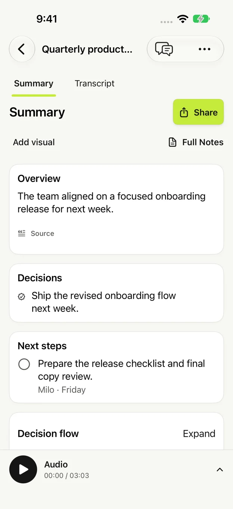

Your words.
Worth keeping.
Branola records conversations on your iPhone or iPad and turns saved audio into searchable transcripts, clear summaries and useful diagrams.
Audio, transcription and AI note generation are processed on your device. Choose a meeting language before recording. Create an overview, decisions and next steps, then share a Summary or Full Notes.
Initial release in preparation. App Store availability follows review.

Private by design.
Recording and transcription do not require Apple Intelligence. Creating new AI summaries and visuals requires compatible hardware, Apple Intelligence enabled and an available model for the meeting language. A one-time Whisper model download is required for offline transcription.
Start with a week.
Branola offers an explicitly chosen 7-day unlimited recording trial, followed by an optional one-time lifetime purchase. No subscription or automatic charge. The app shows your localized price before purchase. Saved recordings and notes remain accessible after the trial.